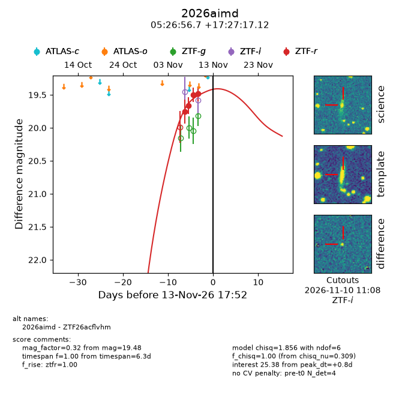
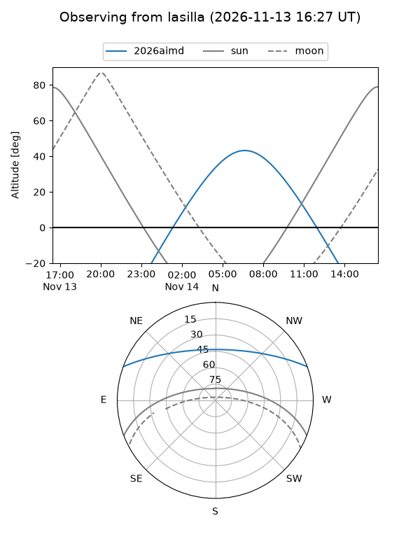
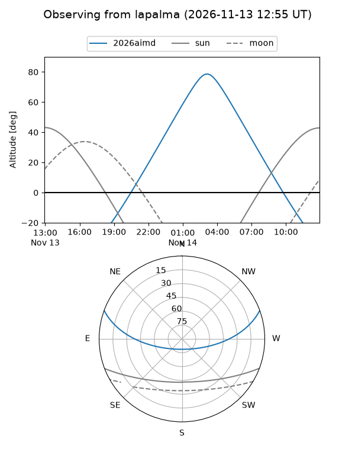
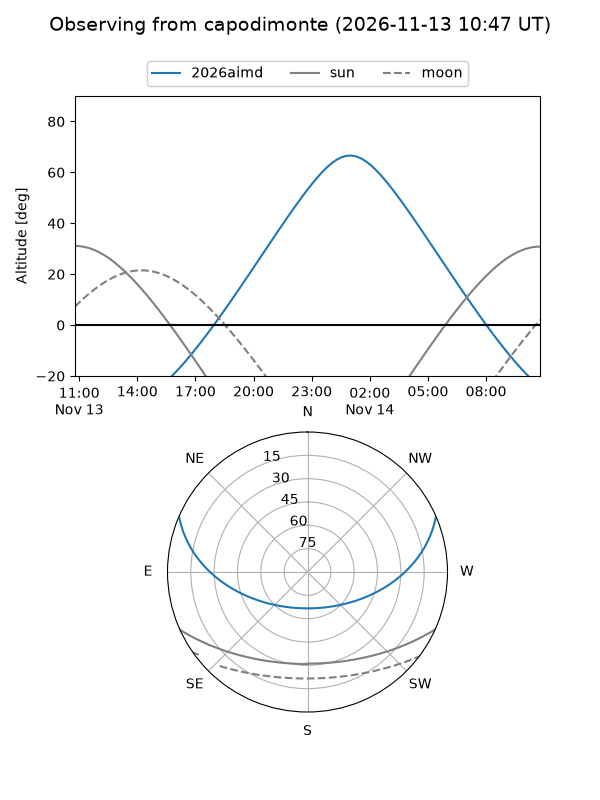
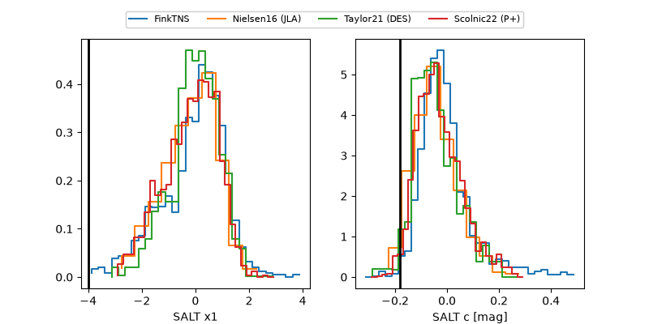

2026aimd
Target 2026aimd at 2026-11-13 17:58
Aliases and brokers:
FINK-ZTF: ztf.fink-portal.org/ZTF26acflvhm
Lasair-ZTF: lasair-ztf.lsst.ac.uk/objects/ZTF26acflvhm
ALeRCE-ZTF: alerce.online/object/ZTF26acflvhm
YSE-PZ: ziggy.ucolick.org/yse/transient_detail/2026aimd
TNS name: wis-tns.org/object/2026aimd
Direct TNS query: direct search
alt names
ZTF26acflvhm (ztf,fink_ztf)
2026aimd (tns,yse)
Coordinates:
equatorial (ra, dec) = 81.7363,+17.45475
equatorial (HMS+DMS) = 05:26:56.72,+17:27:17.12
galactic (l, b) = (187.4701,-9.74051)
Flags:
peak dt: +0.8
Photometry:
last ztfr=19.48
4 ztfr detections
Lightcurve

Visibility



Additional plots
